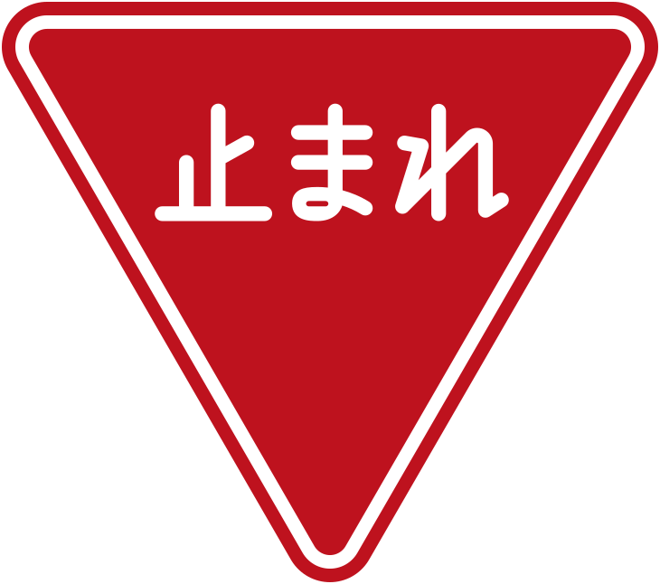
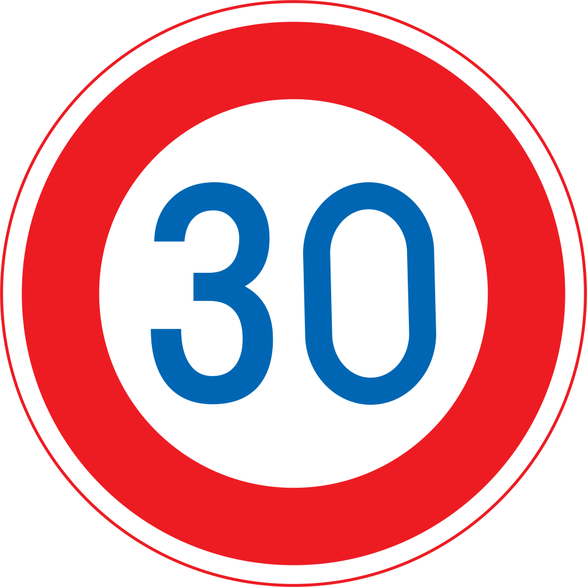
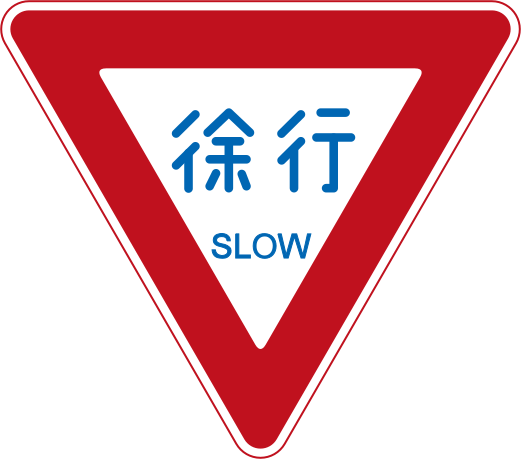
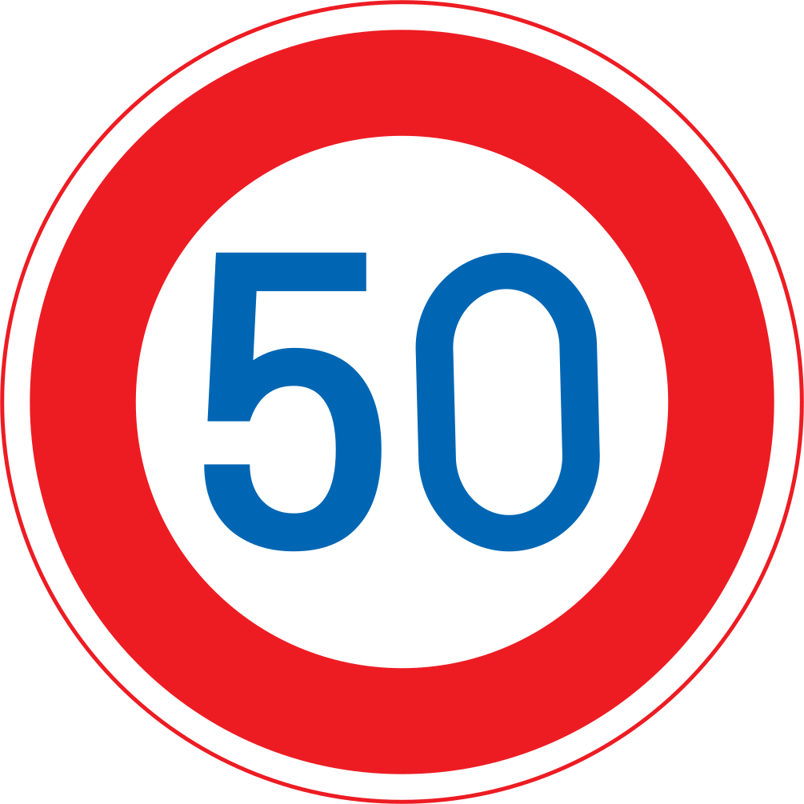

🚨 出發前最重要：改 IX RENTAL 取／還車時間
訂單時間跟班機完全對不上，必須聯絡供應商改，否則會「沒車可開」或「沒地方還車」。
📞 +81-80-3226-1688（IX RENTAL 福岡機場店）
📞 +81-80-3226-1688（IX RENTAL 福岡機場店）
| 項目 | 訂單寫 | 實際要 |
|---|---|---|
| 🟥 9/19 取車 | 10:00 | 18:45–19:30 |
| 🟥 9/25 還車 | 10:00 | 14:30–15:00 |
💬 聯絡時要談的內容（走 LINE）
- 報 Klook 訂單編號（見 Klook App；供應商 IX RENTAL）
日文：予約時間の変更をお願いしたいです - 「班機 CI0128 18:05 落地，9/19 取車改為 18:45–19:30」
- 「9/25 還車改為 14:30 或 15:00」
- 確認門市營業時間、機場接駁方式、兩位駕駛登記、ETC + GPS 領取
⚠️ 訂單標示「不可更改」，2026/9/18 10:00 前可免費取消。協調不成就得在期限前重訂別家 — 不要拖過 9/18。
⚠️ 必看：九州 5 連休警告
2026/9/19–9/23 是日本 11 年來首次「Silver Week 5 連休」
- 9/19 (六)、9/20 (日) 週末
- 9/21 (一) 敬老日
- 9/22 (二) 國民休日（11 年來首見）
- 9/23 (三) 秋分日
🚗 高速塞車，車程抓平常 1.5 倍
🍴 太宰府、柳川、由布院人爆滿
⛽ 高速 SA/PA、加油站可能排隊
🍴 太宰府、柳川、由布院人爆滿
⛽ 高速 SA/PA、加油站可能排隊
🗺️ 七日路線速覽
| Day | 路線 |
|---|---|
| Day 1 | 福岡空港 → IX RENTAL 取車 → 中今旅館 |
| Day 2 | 中今旅館 →（步行早餐）→ 糸島（一蘭の森・とったん・箱島神社・二見ヶ浦）→ 中今旅館 |
| Day 3 | 中今旅館 → 太宰府（星巴克・一蘭）→ 柳川松濤園・藩主立花邸 → 熊本之門酒店 |
| Day 4 | 熊本 → 熊本城 → 阿蘇周邊 → 熊本 |
| Day 5 | 熊本 → 由布院 → 金鱗湖 → 別府地獄 → Super Hotel 別府駅前 |
| Day 6 | Super Hotel → 鐵輪溫泉 → Super Hotel |
| Day 7 | Super Hotel → 博多採買 → IX RENTAL 還車 → 機場 |
📌 已確認訂單
| ✈️ 機票 | CI 0128 / CI 0117（訂位代號見 App） |
| 🚗 租車 | Klook / IX RENTAL · Toyota Aqua 小型車 |
| 🏨 福岡 | 中今旅館 9/19–9/21 |
| 🏨 熊本 | 熊本之門酒店 9/21–9/23 |
| 🏨 別府 | Super Hotel 別府駅前 9/23–9/25 |
DAY 1 · 9/19 (六)
抵達日｜入境取車進博多
福岡空港 → IX RENTAL（取車）→ 中今旅館
⚠️ 中今旅館 入住只到 21:00，且取車時間原訂 10:00 需事先改成傍晚 — 今晚全靠這兩件事。
📍 停靠點
1
福岡空港 國際線航廈🇯🇵 福岡空港 国際線ターミナル｜🇬🇧 Fukuoka Airport Int'l Terminal
福岡市博多区下臼井 778-1
福岡市博多区下臼井 778-1
2
IX RENTAL 福岡機場店🇯🇵 アイエックスレンタカー 福岡支店｜🇬🇧 IX Rental Fukuoka Airport
🇬🇧 2-4-31 Nishitsukiguma, Hakata-ku
博多区西月隈 2-4-31｜📞 +81-80-3226-1688
🇬🇧 2-4-31 Nishitsukiguma, Hakata-ku
博多区西月隈 2-4-31｜📞 +81-80-3226-1688
3
中今旅館（ゲストハウス中今）🇯🇵 ゲストハウス中今｜🇬🇧 GuestHouse Nakaima
🇬🇧 6-26 Reisenmachi, Hakata-ku
博多区冷泉町 6-26｜📞 +81-92-261-5070
🇬🇧 6-26 Reisenmachi, Hakata-ku
博多区冷泉町 6-26｜📞 +81-92-261-5070
⏰ 時間軸
18:05
CI0128 抵 FUK 國際線
18:35
出航廈 → 1F Shuttle Bus 標識往右 → A3 出口左側人行道 → 「一般車」乘降場（15 號柱）打電話叫接駁
19:00
抵 IX RENTAL 取車（門市關門時間待確認）📞 +81-80-3226-1688
19:30
取車完畢，開往中今旅館
19:50
Check-in 中今旅館（已告知抵達 20:00–21:00）
20:30
晚餐：博多もつ鍋 おおやま / 水炊き 若杉（步行 7 分）
☝️ 落地後照這三張走；點圖可放大。📞 +81-80-3226-1688
🅿️ 旅館停車 ¥500/日、無法預約，現場問；備案 トラストパーク櫛田神社前（冷泉町 8-4，步行 3 分，12hr ¥1,400）或 Times（夜間上限 ¥600）。
🚿 00:00–07:00 廚房・客廳・淋浴間停用；全館禁菸。
🚿 00:00–07:00 廚房・客廳・淋浴間停用；全館禁菸。
DAY 2 · 9/20 (日)
糸島半島環線
早餐 山水水出珈琲（步行）→ 中今旅館 → 一蘭の森 → 工房とったん → 箱島神社 → 夫婦岩 二見ヶ浦 → 中今旅館
📍 停靠點
☕
山水水出珈琲（早餐・步行）🇯🇵 山水水出珈琲｜🇬🇧 Sansui Mizudashi Coffee
📞 092-282-0101｜8:00–16:30
博多区下川端町 3-1 博多リバレイン 1F｜步行 3–5 分
📞 092-282-0101｜8:00–16:30
博多区下川端町 3-1 博多リバレイン 1F｜步行 3–5 分
1
一蘭の森🇯🇵 一蘭の森｜🇬🇧 Ichiran no Mori
糸島市志摩松隈 256-10
糸島市志摩松隈 256-10
2
工房とったん（またいちの塩）🇯🇵 またいちの塩 工房とったん｜🇬🇧 Kobo Tottan
糸島市志摩芥屋 3757
糸島市志摩芥屋 3757
3
箱島神社🇯🇵 箱島神社｜🇬🇧 Hakoshima Shrine
糸島市志摩桜井
糸島市志摩桜井
4
夫婦岩 二見ヶ浦🇯🇵 桜井二見ヶ浦（夫婦岩）｜🇬🇧 Sakurai Futamigaura
糸島市志摩桜井
糸島市志摩桜井
⏰ 時間軸
8:30
旅館步行到 山水水出珈琲 吃早餐（8:00 開）
10:00
回旅館取車出發（比原訂晚 30 分 — 夕陽 18:21，早去只會在海邊空等）
11:15
一蘭の森 拉麵午餐（連假排隊抓 30 分）
13:00
工房とったん 海邊鹽工房＋咖啡（ゴハンヤイタル），可久留
15:00
箱島神社 池中小島弁財天
16:00
夫婦岩 二見ヶ浦 — 先卡停車位，周邊咖啡消磨到 日落 18:21 拍白鳥居夕陽
18:40
回福岡市區（連假車程抓 1 hr 25）
20:15
晚餐：博多もつ鍋 笑樂 / やま中（不訂位，晚到可能要等）
🌅 9/20 糸島日落 18:21（天全黑 18:51）。三天裡最寬鬆的一天，白天不用趕。
DAY 3 · 9/21 (一・敬老日)
福岡 → 太宰府 → 柳川 → 熊本
中今旅館 → 食堂おわん → 星巴克太宰府 → 一蘭参道店 → 柳川松濤園・藩主立花邸 → 熊本之門酒店
🚨 立花邸的蒸籠鰻魚飯只供應 11:00–15:00，我們排 13:00 進場。出發前務必打 0944-73-2217 問 L.O. 時間與能否預約。
📍 停靠點
1
食堂 おわん（早餐）🇯🇵 食堂 おわん｜🇬🇧 Shokudo Owan
博多区冷泉町 9-20 1F｜旅館步行 2 分｜📞 092-292-0409
博多区冷泉町 9-20 1F｜旅館步行 2 分｜📞 092-292-0409
2
星巴克 太宰府天滿宮表參道店🇯🇵 スターバックス 太宰府天満宮表参道店｜🇬🇧 Starbucks Dazaifu Tenmangu Omotesando
太宰府市宰府 3-2-43｜隈研吾建築
太宰府市宰府 3-2-43｜隈研吾建築
3
一蘭 太宰府参道店（午餐）🇯🇵 一蘭 太宰府参道店｜🇬🇧 Ichiran Dazaifu Sando
太宰府市宰府 2-6-2｜9:00–19:00｜全球唯一「合格拉麵」
太宰府市宰府 2-6-2｜9:00–19:00｜全球唯一「合格拉麵」
4
柳川松濤園・藩主立花邸 — 蒸籠鰻魚飯🇯🇵 柳川藩主立花邸 御花（松濤園）｜🇬🇧 Yanagawa Ohana / Shotoen
🇬🇧 1 Shingaimachi, Yanagawa
柳川市新外町 1｜入園 ¥1,000｜園區餐廳 📞 0944-73-2217
🇬🇧 1 Shingaimachi, Yanagawa
柳川市新外町 1｜入園 ¥1,000｜園區餐廳 📞 0944-73-2217
5
熊本之門酒店🇯🇵 ホテル ザ ゲート熊本｜🇬🇧 Hotel The Gate Kumamoto
🇬🇧 1-14-1 Kasuga, Nishi-ku
熊本市西区春日 1-14-1｜📞 +81-96-288-0170
🇬🇧 1-14-1 Kasuga, Nishi-ku
熊本市西区春日 1-14-1｜📞 +81-96-288-0170
⏰ 時間軸
⏰ 連假版時間表：每段車程抓平常 1.5 倍，午餐提前到 10:00 — 為的是確保趕得上鰻魚飯的營業時間（11:00–15:00）。
7:30
食堂 おわん 早餐（開門就吃，L.O. 9:30；土鍋炊飯 + 出汁玉子燒）
8:15
回旅館取行李 → 退房出發（退房期限 11:00）
9:00
抵太宰府，停駐車センター ¥500（連假找車位抓 20 分）
9:20
星巴克 太宰府天滿宮表參道店（隈研吾木條建築）+ 參道梅枝餅（やす武 / かさの家）
10:00
午餐：一蘭 太宰府参道店（9:00 開門，提早吃避開排隊尖峰）
11:15
出發柳川（九州道 太宰府IC → みやま柳川IC，連假抓 1 hr 25）
12:40
抵 柳川松濤園・藩主立花邸，停車
13:00
蒸籠鰻魚飯（園區餐廳 11:00–15:00，這個時間進場最安全；おすすめセット ¥3,888）
14:00
松濤園 + 大廣間・西洋館・立花家史料館（¥1,000，見學 10:00–16:00）
15:00
出發熊本（九州道，連假抓 2 hr 30）
17:30
Check-in 熊本之門酒店（已告知抵達 17:00–18:00）
19:00
晚餐：菅乃屋（馬肉）/ 黒亭（拉麵，步行 8 分）/ 勝烈亭
🌅 9/21 柳川日落 18:19。15:00 出發、17:30 抵熊本，全程天亮時開車，不用摸黑。
🅿️ 太宰府駐車センター ¥500；松濤園・立花邸有專用停車場。
⚠️ 熊本之門酒店沒有自己的停車場，要停附近付費場，且地下車位夜間關閉無法取車 — 抵達前先致電確認。
🍽️ 飯店房內禁止用餐；男女共用淋浴間與廁所。
⚠️ 熊本之門酒店沒有自己的停車場，要停附近付費場，且地下車位夜間關閉無法取車 — 抵達前先致電確認。
🍽️ 飯店房內禁止用餐；男女共用淋浴間與廁所。
DAY 4 · 9/22 (二・國民休日)
熊本城＋阿蘇周邊
熊本之門酒店 → 熊本城 → 城彩苑 → ミルクロード → 大觀峰 → 道の駅 → 米塚 → 草千里 → 國道 57 → 熊本之門酒店
🌋 阿蘇噴火警戒等級 2（火口周邊規制）— 2026/9/4 16:00 起（8/14 起的等級 3 已調降）
氣象廳：影響超過中岳第一火口 1 km、到約 2 km 範圍的噴火可能性已降低；火口周邊仍有規制，範圍出發前看 aso-volcano.jp。
✅ 草千里・草千里展望所・阿蘇火山博物館・大觀峰・道の駅 阿蘇 照常開放，本日行程不受影響。
🚗 上山建議走北側（阿蘇市側）：ミルクロード → 縣道 111 / 299・298。
⚠️ 南登山道（南阿蘇村側縣道 111） 8 月查證時中途全面通行止，等級調降後是否恢復未確認 — 導航若帶你走南阿蘇村側，出發前先查 阿蘇市道路交通情報。
氣象廳：影響超過中岳第一火口 1 km、到約 2 km 範圍的噴火可能性已降低；火口周邊仍有規制，範圍出發前看 aso-volcano.jp。
✅ 草千里・草千里展望所・阿蘇火山博物館・大觀峰・道の駅 阿蘇 照常開放，本日行程不受影響。
🚗 上山建議走北側（阿蘇市側）：ミルクロード → 縣道 111 / 299・298。
⚠️ 南登山道（南阿蘇村側縣道 111） 8 月查證時中途全面通行止，等級調降後是否恢復未確認 — 導航若帶你走南阿蘇村側，出發前先查 阿蘇市道路交通情報。
🏯 2026/7/28 熊本地震（M7.1・震度 7）後續：熊本城 8/13 已重新開園（天守閣 + 特別見學通路照常），石垣 59 處受損、數寄屋丸崩落，部分區域可能圍起。
城彩苑 わくわく座臨時休館，櫻之小路美食商店與觀光案內所正常。九州道 8/14 全線恢復、熊本市電正常運行。
城彩苑 わくわく座臨時休館，櫻之小路美食商店與觀光案內所正常。九州道 8/14 全線恢復、熊本市電正常運行。
📍 停靠點
1
熊本城🇯🇵 熊本城｜🇬🇧 Kumamoto Castle
中央区本丸 1-1｜¥800
中央区本丸 1-1｜¥800
2
櫻之馬場 城彩苑🇯🇵 桜の馬場 城彩苑｜🇬🇧 Sakura-no-baba Josaien
中央区二之丸 1-1-2
中央区二之丸 1-1-2
3
阿蘇周邊（依序 大觀峰 → 道の駅 → 米塚 → 草千里）🇯🇵 大観峰／道の駅 阿蘇／米塚／草千里ヶ浜
🇬🇧 Daikanbo / Michi-no-Eki Aso / Komezuka / Kusasenrigahama
熊本県阿蘇市一帶
🇬🇧 Daikanbo / Michi-no-Eki Aso / Komezuka / Kusasenrigahama
熊本県阿蘇市一帶
⏰ 時間軸
⏰ 連假版時間表：車程抓 1.5 倍，並把大觀峰移到草千里之前 — 由北往南一路順走不繞回頭路，夕陽時人在草千里。
8:30
出發（連假停車位難找，早點到熊本城）
9:00
熊本城（8/13 震後重新開園；天守閣 + 特別見學通路，9:00–17:00，最終入園 16:00，¥800）
11:00
城彩苑 午餐 + 伴手禮（馬肉、陣太鼓、くまモン）｜わくわく座休館中
12:30
出發阿蘇（走 ミルクロード，從北側上山，連假抓 2 hr）
14:30
大觀峰 阿蘇五岳全景（平坦步道 100 m；茶店 8:30–17:00）
15:15
道の駅 阿蘇（火山資訊館、特產、廁所）
15:45
米塚展望所（路邊停 5 分）
16:15
草千里浜 平坦草原、放牧牛馬；阿蘇火山博物館 ¥1,100
17:30
下山，走國道 57 號回熊本（比 ミルクロード 山路好開太多）
🌅 9/22 阿蘇日落 18:15、天全黑 18:45。17:30 從草千里下山，前 45 分還有光，下山後走國道 57 才天黑 — 避開摸黑開山路。
想在草千里等夕陽就留到 18:15（那裡的日落比大觀峰美），但回熊本約 20:15、整段山路都是暗的，第一次在日本開車不建議。
想在草千里等夕陽就留到 18:15（那裡的日落比大觀峰美），但回熊本約 20:15、整段山路都是暗的，第一次在日本開車不建議。
🔄 備案：若出發前噴火警戒升到等級 4，草千里一帶也會關閉 → 改成熊本城周邊延長（城彩苑・くまモンスクエア）+ 菊池溪谷或大觀峰以北的ミルクロード段。
19:30
抵熊本，晚餐：勝烈亭 / 天外天（豚骨拉麵元祖）
🅿️ 城彩苑 2hr ¥400 + 每hr ¥200（2026/4 改制）、道の駅免費、草千里 ¥500、大觀峰免費
☀️ 陽光強帶帽水；山上 18–22°C 帶薄外套
☀️ 陽光強帶帽水；山上 18–22°C 帶薄外套
DAY 5 · 9/23 (三・秋分日)
熊本 → 由布院 → 別府
熊本之門酒店 → 由布院温泉 → 金鱗湖 → 別府地獄 → Super Hotel 別府駅前
⚠️ 連假最後一天：建議走 ミルクロード+やまなみハイウェイ 風景線（107 km / 2.5 hr，但風景超美）
📍 停靠點
1
由布院温泉（湯の坪街道）🇯🇵 由布院温泉 湯の坪街道｜🇬🇧 Yunotsubo Kaido, Yufuin
大分縣由布市湯布院町
大分縣由布市湯布院町
2
金鱗湖🇯🇵 金鱗湖｜🇬🇧 Lake Kinrin
由布市湯布院町川上 1561-1
由布市湯布院町川上 1561-1
3
別府地獄🇯🇵 別府地獄めぐり（海地獄／血の池地獄／龍巻地獄）
🇬🇧 Hells of Beppu
別府市鐵輪 559-1｜共通券 ¥2,400
🇬🇧 Hells of Beppu
別府市鐵輪 559-1｜共通券 ¥2,400
4
Super Hotel 別府駅前🇯🇵 スーパーホテル別府駅前｜🇬🇧 Super Hotel Beppu Ekimae
🇬🇧 13-8 Ekimaecho, Beppu
別府市駅前町 13-8｜📞 +81-977-73-9000
🇬🇧 13-8 Ekimaecho, Beppu
別府市駅前町 13-8｜📞 +81-977-73-9000
⏰ 時間軸
8:00
熊本之門酒店 退房出發（退房 07:00–10:00）
10:30
由布院。金鱗湖 5 分繞一圈、湯の坪街道、B-speak 蛋糕卷、Snoopy 茶屋、金賞可樂餅
12:30
午餐：ゆふいん市 豐後牛漢堡 / 山椒郎
14:00
出發別府（高速 30 分）
14:30
別府地獄 精選 3 個：海地獄 + 血池 + 龍卷
17:00
Check-in Super Hotel 別府駅前（已告知抵達 17:00–18:00）
18:00
晚餐：とよ常 天婦羅
⚠️ 冷麺の胡月週三只營業到 17:30（週二公休），9/23 晚餐排不進去，想吃要改在白天。とよ常 9/23（週三）是否營業未查到，出發前確認。
🅿️ 湯の坪公營 ¥500、金鱗湖週邊 ¥600（土日祝 ¥900）、別府地獄各區免費、Super Hotel 用附近私人停車場 ¥500/晚（先到先停、不能預約）
DAY 6 · 9/24 (四)
別府慢遊｜鐵輪溫泉
Super Hotel 別府駅前 → 鐵輪溫泉 → 明礬湯之里 → 湯けむり展望台 → Super Hotel
📍 停靠點
1
鐵輪溫泉 地獄蒸し工房🇯🇵 鉄輪温泉／地獄蒸し工房 鉄輪｜🇬🇧 Kannawa Onsen / Jigoku Mushi Kobo
別府市大字鉄輪字風呂本 212｜10:00 開門
別府市大字鉄輪字風呂本 212｜10:00 開門
2
明礬湯之里🇯🇵 明礬 湯の里｜🇬🇧 Myoban Yunosato
湯花小屋、買湯花入浴劑
湯花小屋、買湯花入浴劑
3
明礬 岡本屋売店🇯🇵 岡本屋売店｜🇬🇧 Okamotoya Baiten
別府市明礬 3 組｜8:30–18:30（L.O. 17:30）｜地獄蒸布丁、溫泉蛋
別府市明礬 3 組｜8:30–18:30（L.O. 17:30）｜地獄蒸布丁、溫泉蛋
4
湯けむり展望台🇯🇵 湯けむり展望台｜🇬🇧 Yukemuri Observatory
鐵輪溫泉煙霧群
鐵輪溫泉煙霧群
⏰ 時間軸
9:30
飯店吃完早餐出發（含早餐）
10:00
地獄蒸し工房（食材 ¥500–1,500 + 蒸し釜 小 ¥400／大 ¥600（15 分內），10:00 才開門）
12:00
午餐繼續地獄蒸
13:30
明礬：湯之里（看湯花小屋・買入浴劑）+ 岡本屋売店 地獄蒸布丁、溫泉蛋
14:30
湯けむり展望台
16:00
自由：竹瓦溫泉 入浴 ¥300 / 砂湯 ¥1,500 / Global Tower 展望
18:30
晚餐：お食事處 千成 / 東洋軒（炸雞元祖）
💡 地獄蒸し工房 10:00–19:00（L.O. 18:00），休館日為每月第 3 個週三（遇祝日順延）— 9 月是 9/16，9/24 照常營業。
🍮 岡本屋売店在明礬（不是鐵輪），跟湯之里同一區，13:30 一起逛。
🍮 岡本屋売店在明礬（不是鐵輪），跟湯之里同一區，13:30 一起逛。
DAY 7 · 9/25 (五)
回國日｜博多採買 → 還車 → 機場
Super Hotel 別府駅前 → 博多市區（採買用餐）→ IX RENTAL 還車 → 福岡空港
⚠️ 必協調：訂單寫 10:00 還車，實際 14:30 才能還。打 +81-80-3226-1688（IX RENTAL）或 Klook 客服確認延後 — 9/18 10:00 前處理完
📍 停靠點
1
Super Hotel 別府駅前🇯🇵 スーパーホテル別府駅前｜🇬🇧 Super Hotel Beppu Ekimae
🇬🇧 13-8 Ekimaecho, Beppu
別府市駅前町 13-8
🇬🇧 13-8 Ekimaecho, Beppu
別府市駅前町 13-8
2
博多市區🇯🇵 博多駅／キャナルシティ博多｜🇬🇧 Hakata Station / Canal City
博多站 / 運河城 / 冷泉町一帶
博多站 / 運河城 / 冷泉町一帶
3
IX RENTAL 福岡機場店（還車）🇯🇵 アイエックスレンタカー 福岡支店｜🇬🇧 IX Rental Fukuoka Airport
博多区西月隈 2-4-31｜📞 +81-80-3226-1688
博多区西月隈 2-4-31｜📞 +81-80-3226-1688
4
福岡空港 國際線🇯🇵 福岡空港 国際線ターミナル｜🇬🇧 Fukuoka Airport Int'l Terminal
博多区下臼井 778-1
博多区下臼井 778-1
⏰ 時間軸
7:00
Super Hotel 退房（10:00 前）
7:30
出發福岡（高速 ~2 hr 10 分）
9:45
抵博多市區
10:00
博多阪急 B1 / 博多デイトス 採買明太子、洋菓子
11:30
午餐：水炊き 若杉 本店 / 博多市場 海鮮丼
13:00
博多運河城 / Daimaru / KITTE 博多 最後採買
14:00
開車到 IX RENTAL 福岡機場店（~20 分）
14:30
抵 IX RENTAL 還車（訂單原定 10:00，須已協調延後）
15:00
回福岡空港 國際線（還車後的接送方式取車時先問清楚）
18:30
Check-in、退稅、通關
21:00
CI0117 起飛
💡 備案（門市不延後）：7:00 出發 → 9:45 直接還車 → 到機場 Locker 寄物 → 地鐵到博多採買 → 16:00 返機場
🏨 福岡 中今旅館 周邊（Day 1、2、7）
博多区冷泉町。步行 3 分到櫛田神社、川端商店街，5–10 分到中洲、運河城、天神
| 必吃 | 地址 / 提醒 |
|---|---|
| 一蘭 本社總本店（24h） | 博多区中洲 5-3-2；本社限定「重箱」吃法 |
| 博多もつ鍋 おおやま 本店 | 博多区中洲 3-7-24；醬油味噌湯頭都神 |
| 博多もつ鍋 笑樂 本店 | 中央区西中洲 11-4 |
| 水炊き 橙（中洲） | 博多区中洲 5-3-8；雞湯系名店 |
| 水炊き 若杉 本店 | 博多区奈良屋町 8-12（旅館步行 7 分） |
| 元祖博多めんたい重 | 中央区西中洲 6-15；明太子米飯重 |
| 博多運河城 Ramen Stadium | 5F 拉麵主題集合 |
| 川端ぜんざい広場 | 川端商店街內，紅豆湯名店（旅館步行 3 分） |
| 食堂 おわん | 博多区冷泉町 9-20 1F（旅館步行 2 分）；土鍋炊飯早餐 7:30–10:00（L.O. 9:30） |
🏨 熊本 熊本之門酒店 周邊（Day 3、4）
西区春日，熊本駅東口（白川口）步行 1 分（熊本森都心プラザ 1F）
| 必吃 | 地址 / 提醒 |
|---|---|
| 菅乃屋 熊本駅店（馬肉） | 熊本駅內（步行 5 分）；馬刺身 / 馬肉壽司 / 烤馬肉膳 |
| 勝烈亭 新市街本店（炸豬排） | 中央区新市街 8-18 |
| 桂花拉麵 本店 | 中央区花畑町 11-9；熊本豚骨元祖 |
| 天外天 本店（拉麵） | 中央区安政町 |
| 黒亭 本店（拉麵） | 西区二本木 2-1-23（飯店步行 8 分） |
| 大關馬肉 | 中央区下通；熟食 / 馬肉醬煮 |
| いきなり団子 | 路邊小吃 / 熊本駅內物產館 |
🏨 別府 Super Hotel 別府駅前 周邊（Day 5、6）
飯店就在別府站前，步行 1–2 分到車站、5 分到北浜海岸、10 分到別府塔
| 必吃 | 地址 / 提醒 |
|---|---|
| とよ常 本店（天婦羅） | 北浜 2-12-24；特上天丼 ¥980 銅板神店 |
| 冷麺の胡月（別府冷麺） | 石垣東 8-1-26；週二休、週三只到 17:30 |
| お食事處 千成（鄉土料理） | 北浜 1-9-2 |
| 東洋軒 別府本店（炸雞元祖） | 石垣東 7-8-22；大分炸雞發源 |
| 岡本屋売店（明礬） | 明礬 3 組；8:30–18:30（L.O. 17:30）；地獄蒸布丁、溫泉蛋 |
| べっぷ駅市場 | 別府站旁；當地早餐、関アジ握り |
| 甘味茶屋（だんご汁） | 実相寺 1-4；大分鄉土麵食 |
| 友永パン屋（百年麵包店） | 千代町 2-29；當地人早餐 |
🛍️ 必買紀念品
🥢 福岡 / 博多
| 品項 | 哪裡買 |
|---|---|
| 明太子（ふくや / やまや / あごおとし） | 博多阪急 B1、博多デイトス、機場 |
| 博多通りもん（必買） | 全部物產店 |
| 二○加煎餅、博多ぽてと、鶴乃子 | 博多デイトス、機場 |
| 博多もつ鍋 真空包 | おおやま、笑樂 公式店 |
🐴 熊本
| 品項 | 哪裡買 |
|---|---|
| 馬肉味噌、馬肉ジャーキー、馬刺し醬油 | 城彩苑、熊本駅物產館 |
| 誠味屋 陣太鼓、いきなり団子禮盒 | 城彩苑、熊本駅 |
| くまモン周邊 | 城彩苑「くまモンスクエア」、機場 |
| 球磨燒酎（送禮佳） | 熊本駅物產館 |
♨️ 別府 / 大分
| 品項 | 哪裡買 |
|---|---|
| 湯花入浴劑（明礬湯之里限定） | 明礬湯之里現場、別府站 |
| 岡本屋 地獄蒸布丁（不耐放） | 明礬 岡本屋売店 |
| かぼす製品、椎茸乾貨 | 別府站、道の駅 |
| 関アジ・関サバ 加工品 | 別府站、福岡空港 |
| 由布院 B-speak ロールケーキ | 湯之坪商店街（Day 5 順買） |
| Snoopy 茶屋限定品 | 湯之坪商店街 |
🛒 採買時機
| Day | 採買重點 |
|---|---|
| 2 | 工房とったん「またいちの塩」花藻塩；一蘭の森 限定伴手禮 |
| 4 | 城彩苑 + 道の駅阿蘇（馬肉、阿蘇牛乳） |
| 5 | 由布院湯之坪（B-speak、Snoopy）；別府站湯花、布丁 |
| 6 | 明礬湯之里補湯花；岡本屋現買布丁 |
| 7 | 博多阪急 B1 / デイトス / 機場 主力採買 |
✈️ 機票
訂位代號：見電子機票 / App
| 日期 | 航班 | 起飛 | 抵達 |
|---|---|---|---|
| 9/19 (六) | CI 0128 | 14:40 TPE | 18:05 FUK |
| 9/25 (五) | CI 0117 | 21:00 FUK | 22:25 TPE |
🏨 住宿
| 入住 | 飯店 | 房型 / 房價 |
|---|---|---|
| 9/19、20 | 中今旅館 🇯🇵 ゲストハウス中今 🇬🇧 GuestHouse Nakaima 🇯🇵 博多区冷泉町 6-26 🇬🇧 6-26 Reisenmachi, Hakata-ku 📞 +81-92-261-5070 | 混合宿舍上下鋪 × 2 床位 TWD 4,956（¥24,800 現場付） |
| 9/21、22 | 熊本之門酒店 🇯🇵 ホテル ザ ゲート熊本 🇬🇧 Hotel The Gate Kumamoto 🇯🇵 熊本市西区春日 1-14-1 🇬🇧 1-14-1 Kasuga, Nishi-ku 📞 +81-96-288-0170 | Semi-Private Bunk Bed 2 人房 TWD 4,397（¥22,000） |
| 9/23、24 | Super Hotel 別府駅前 🇯🇵 スーパーホテル別府駅前 🇬🇧 Super Hotel Beppu Ekimae 🇯🇵 大分県別府市駅前町 13-8 🇬🇧 13-8 Ekimaecho, Beppu 📞 +81-977-73-9000 | 附沙發床雙人房・含早餐 TWD 3,976（¥19,894） |
總價 TWD 13,329（每人 ~ TWD 6,665）
🗣️ 問路時直接把 🇯🇵 那行拿給對方看 — 日本人多半看不懂英文地址；🇬🇧 那行用來查 Google Maps 與對訂房紀錄。
各家關鍵注意
| 飯店 | 入住 / 退房 | 停車 | 一定要知道 |
|---|---|---|---|
| 中今旅館 | 9/19 15:00–21:00 9/21 11:00 前 | ¥500/日 無法預約 | ⚠️ 21:00 後無法入住；櫃台 11:00–15:00 無人（可寄行李）；00:00–07:00 廚房・淋浴停用；全館禁菸；城市稅 ¥200/人/晚現場付 |
| 熊本之門酒店 | 9/21 15:00–00:00 9/23 07:00–10:00 | ⚠️ 飯店無停車場 地下車位夜間關閉 | 房內禁止用餐；男女共用淋浴間 / 廁所；9/21 14:00 後取消不退款 |
| Super Hotel 別府駅前 | 9/23 15:00–00:00 9/25 10:00 前 | 附近 ¥500/晚 先到先停、不能預約 | 含早餐；住宿方不提供網路（靠自己的 eSIM）；Booking 已代付 ¥1,809 |
🚗 租車
Klook 訂單 · Toyota Aqua 或同級 小型轎車 · IX RENTAL
| 取/還車門市 | IX RENTAL 福岡機場店 🇯🇵 アイエックスレンタカー 福岡支店 🇯🇵 福岡市博多区西月隈 2-4-31 🇬🇧 2-4-31 Nishitsukiguma, Hakata-ku, Fukuoka 📞 +81-80-3226-1688 |
| 取車 | 9/19 10:00（需改 18:45–19:30） |
| 還車 | 9/25 10:00（需改 14:30–15:00） |
| 門市營業 | ⚠️ 未確認（查到週日 08:00–20:00） |
| 接駁 | 無定時接駁車：到「一般車」乘降場後打電話請門市來接 |
| 車輛 | 5 人座 / 行李僅 2 件 / 自排 / 空調 |
| 費用 | NT$ 6,697（線上已付） |
| 燃油 / 里程 | 滿油取還 / 無限里程 |
| 駕駛 | 兩位（兩位都需日文譯本） |
🚌 機場 ↔ 門市 接駁流程
| Step | 做什麼 | 給日本人看的日文 |
|---|---|---|
| 1 | 國際線航廈 1F 找 Shuttle Bus 標識 → 往右直走 | 国際線の一階で Shuttle Bus の標識を見つけて、右側にまっすぐ行ってください |
| 2 | 從 A3 出口出去 → 走左邊人行道過斑馬線 | A3 出口から出たら、左側の横断歩道を通ってください |
| 3 | 到 「一般車」乘降場（藍色柱 15 號）→ 打電話請門市來接 | 一般車乗降場に到着後、係員に連絡してください |
☝️ 點圖可開大圖（IX RENTAL 福岡支店官方指引，含日／英／中／韓四語）
📞 接人專線同門市 +81-80-3226-1688；「一般車」是一般車輛乘降區，不是巴士站。
⚠️ 還車後回機場的接送方式未確認，取車時當面問清楚。
⚠️ 還車後回機場的接送方式未確認，取車時當面問清楚。
訂單已含（不必另外加購）
- ✅ ETC 卡、GPS 導航、多人駕駛（1 位免費）
- ✅ 租車自負額 US$0、車輛竊盜搶奪 US$0
- ✅ 第三人責任險（自負額 US$1,237）、營業損失賠償 NOC（上限 US$800）
- ❓ KEP 6 天 ¥15,000，取車臨櫃請對方跟 ETC 實付比較
⚠️ 訂單標示不可更改；2026/9/18 10:00 前可免費取消。時間協調不成要在期限前重訂。
必備文件
- 台灣駕照正本（兩位駕駛）
- 駕照日文譯本（兩位各一份；台灣監理所 NT$100）
- 護照
- Klook 租車憑證（紙本）
🚇 市區交通（地鐵・市電・巴士）
全程自駕，以下是不開車時的備援：Day 7 還車後採買、市區夜間移動、喝酒不開車。資料 2026/08 查證，出發前再對一次官網。
🌸 福岡市地下鐵（福岡市地下鉄 / Fukuoka City Subway）
| 路線 | 區間 | 用途 |
|---|---|---|
| 空港線 Kuko Line | 福岡空港 ↔ 博多 ↔ 天神 ↔ 姪浜 | 主力：機場、博多、天神、中洲川端 |
| 箱崎線 Hakozaki Line | 中洲川端 ↔ 貝塚 | 幾乎用不到 |
| 七隈線 Nanakuma Line | 橋本 ↔ 天神南 ↔ 博多 | 2023 延伸博多站；藥院、大濠方向 |
| 福岡空港 → 博多站 | ¥260 / 約 5 分 |
| ⚠️ 國際線航廈 | 沒有地鐵站，要先搭免費連絡巴士到國內線（約 10 分），全程約 20 分 |
| 一日乘車券 | ¥640（兒童 ¥320） |
| IC 卡 | Suica / PASMO / ICOCA 全國互通卡可直接刷 |
| 班距 | 白天約 5–8 分 |
💡 中今旅館最近的站是 中洲川端駅（空港線・箱崎線），步行約 5 分；從博多站搭 1 站即到。
🐻 熊本市電（熊本市電 / Kumamoto City Tram）
熊本沒有地鐵，市區靠路面電車 + JR。
| A 系統 | 田崎橋 ↔ 熊本駅前 ↔ 辛島町 ↔ 熊本城・市役所前 ↔ 健軍町 |
| B 系統 | 上熊本 ↔ 辛島町 ↔ 健軍町 |
| 車資 | 大人均一 ¥200／兒童 ¥100（2025/6 起） |
| 一日券 | 紙本 ¥700；手機版較便宜（市交通局 App / 九州 MaaS） |
| 熊本駅前 → 熊本城 | A 系統約 10 分 ¥200，城彩苑旁就是電停 |
| ⚠️ 轉乘 | 上熊本方向 ↔ 田崎橋方向要在 辛島町 換車 |
💡 熊本之門酒店在熊本駅東口（白川口）步行 1 分（熊本森都心プラザ 1F），走到「熊本駅前」電停即可 — Day 4 不想找停車位時可改搭市電。
♨️ 別府（Beppu）
| 軌道運輸 | 沒有地鐵也沒有市電 |
| 主要交通 | 龜之井巴士（亀の井バス / Kamenoi Bus）— 別府駅・別府駅西口・鐵輪為轉運點 |
| 一日券 | My Beppu Free（マイべっぷフリー）迷你版，含鐵輪・地獄區 — 價格出發前官網確認 |
| JR | 日豐本線 別府 ↔ 大分 約 12 分 |
🅿️ Super Hotel 就在別府駅前，Day 6 鐵輪自駕即可，巴士只是備援。
🍽️ 用餐策略（我們不預約，全部現場）
不訂位就得靠時間差 — 下面是每家的開門時間與該去的時段。
| 餐廳 | 營業時間 | 現場攻略 |
|---|---|---|
| 藩主立花邸 蒸籠鰻魚飯 Day 3 | 11:00–15:00 | ⚠️ 最要留意的一家。L.O. 未公布，Day 3 已調成 13:00 進場，再晚有吃不到的風險 |
| 一蘭 太宰府参道店 Day 3 午餐 | 9:00–19:00（L.O. 18:45）無休 | 10:00 去。只有 16 席，連假中午要等 30 分以上 |
| 一蘭の森 Day 2 午餐 | 依官網 | 現場候位，連假排隊抓 30 分 |
| 食堂 おわん Day 3 早餐 | 7:30–10:00（L.O. 9:30） | ⚠️ 不定休，可能撲空。備案：川端商店街或便利商店 |
| 水炊き 若杉 / 橙 | 晚間 | 不訂位就開店就進場（17:30–18:00） |
| 博多もつ鍋 おおやま / 笑樂 | 晚間 | 連假 19:00 後大排長龍，18:00 前入座 |
| とよ常 本店（別府） | 午/晚 | 銅板神店，避開 12:00 與 19:00 |
🎯 不預約的通則：比人潮早一輪。午餐 11:00 前、晚餐 18:00 前入座，連假幾乎都不用排。
⚠️ 唯一真正有風險的是 Day 3 鰻魚飯（15:00 就關）。趕不上的話，備案是柳川市區的 若松屋 或 本吉屋（晚間也營業）。
門票（成人單張）
| 景點 | 票價 |
|---|---|
| 熊本城 | ¥800（9:00–17:00 / 最終 16:00）｜8/13 震後重新開園 |
| 別府地獄共通券（7 個） | ¥2,400（單買 ¥450/個） |
| 柳川松濤園・藩主立花邸（含史料館） | ¥1,000（見學 10:00–16:00） |
| 阿蘇火山博物館 | ¥1,100（選擇性）｜警戒等級 2（9/4 起）照常開放 |
| 竹瓦溫泉 | 入浴 ¥300 / 砂湯 ¥1,500 |
| 地獄蒸し工房 | 食材 ¥500–1,500 + 蒸し釜 小 ¥400／大 ¥600（15 分內） |
完全免費
箱島神社、夫婦岩 二見ヶ浦、太宰府天滿宮、城彩苑、米塚展望所、草千里浜（停車 ¥500）、大觀峰、道の駅 阿蘇、由布院湯之坪、金鱗湖、明礬湯之里、湯けむり展望台
💰 預算試算
2 人共用固定費用；餐費、伴手禮、個人消費另計
| 🏨 住宿 6 晚 | TWD 13,329 |
| 🚗 租車 6 天 Aqua（含全險 + ETC + GPS） | NT$ 6,697（已付） |
| 🛣️ 高速通行費（ETC） | ~¥12,500 |
| ⛽ 燃油（Aqua 25–30 km/L） | ~¥4,500 |
| 🅿️ 停車 6 晚 | ~¥7,000 |
| 🎟️ 主要門票 ×2 | ¥8,400 |
日幣小計 ¥32,400（≈ TWD 7,130）
合計 ≈ NT$27,200（2 人） / 每人約 NT$13,600
🚨 2026/9/1 新制：生活道路 60 → 30 km/h
沒有中央線（分隔線）的一般道路，未特別標示時，法定速度就是 30 km/h。
我們 9/19 出發，正好在新制上路之後 — 網路上舊的自駕攻略講的 60 km/h 已經不適用。
我們 9/19 出發，正好在新制上路之後 — 網路上舊的自駕攻略講的 60 km/h 已經不適用。
| 施行日 | 2026/9/1（出發前 18 天） |
| 對象 | 沒有中央線／中央分隔島的道路，多為寬度未滿 5.5 m 的窄路 |
| 範圍 | 全國國道・都道府県道・市町村道的 約 7 成 |
| 舊制 | 無標誌時原則 60 km/h |
⚠️ 實際會遇到的地方：博多冷泉町老街巷弄、糸島鄉間小路、柳川市區、別府北浜巷弄。
看到路面沒有中央線，就自動降到 30 最安全。
看到路面沒有中央線，就自動降到 30 最安全。
📄 三份文件缺一不可
- 台灣駕照正本（影本無效）
- 駕照日文譯本 — 監理所 NT$100 當天領。不是國際駕照（日本不承認台灣的國際駕照）
- 護照
兩位駕駛各自都要備齊三份，缺一租車公司直接拒絕交車。
🚸 一定要看懂的號誌

止まれ完全停止 3 秒（紅色倒三角）

最高速度圈內數字 = 上限無標誌窄路預設 30

徐行減到隨時能停（約 10 km/h）
車両進入禁止禁止進入
（多為單行道逆向）
（多為單行道逆向）
一方通行單行道
只能往箭頭方向
只能往箭頭方向
駐車禁止禁止停車
可短暫上下客
可短暫上下客
駐停車禁止連停下都不行
（斜線交叉 = 更嚴）
（斜線交叉 = 更嚴）

最高速度 50標誌永遠優先於法定速度
💡 藍底 = 指示（可以做）、紅圈 = 禁止、紅色倒三角 = 停下來。記這三個顏色規則就能猜對八成。
號誌圖為日本《道路標識、區劃線及道路標示相關命令》法定圖形，屬公共領域（著作權法第 13 條）；SVG 取自 Wikimedia Commons（Public domain）。
🇯🇵 台灣人最容易犯的 5 件事
| 1. 靠左行駛・右駕 | 方向盤在右、車走左側。最容易錯的是右轉（切到對向）和出停車場 |
| 2. 雨刷 ↔ 方向燈相反 | 日本車雨刷在左、方向燈在右，跟台灣相反。前三天一定會打錯 |
| 3.「止まれ」要完全停止 | 紅色倒三角標誌 + 路面「止まれ」，輪子停死 3 秒再走。滑行過去就是違規，日本無號誌路口極多 |
| 4. 行人絕對優先 | 斑馬線前有人（含在等的）一定要停，近年取締極嚴 |
| 5. 平交道一律停車 | 不管有無柵欄、有無來車，都要停下確認左右 |
🚗 速限
| 道路 | 法定速度 |
|---|---|
| 高速公路 | 100 km/h（部分區間 120；依現場標誌） |
| 一般道路（有中央線） | 60 km/h |
| 生活道路（無中央線） | 30 km/h（2026/9/1 起） |
| 標誌有寫 | 以標誌為準（標誌 > 法定） |
📷 日本測速照相（オービス）與埋伏取締不少，九州道尤其常見。超速 30 km/h 以上可能直接吊照 + 刑事罰。
⛔ 絕對不能做
| 🍺 酒駕 | 酒氣帶：3 年以下拘禁刑或 50 萬日圓罰金；酒醉：5 年以下拘禁刑或 100 萬日圓罰金 |
| 🍺 搭酒駕者的車 | 同乘者也會被罰（道交法 65 條）；提供車輛、提供酒給駕駛同樣有罪 |
| 📱 開車用手機 | 2019 年起罰則大幅加重，拿在手上就違規；要看導航請靠邊停 |
| 🚸 不繫安全帶 | 後座也必須繫 |
💡 日本是零容忍，喝一口都算。晚餐要喝酒就把車留在飯店停車場，隔天再開。
⛽ 加油（加錯油會毀引擎）
| 日文 | 是什麼 | 我們的車 |
|---|---|---|
| レギュラー | 一般無鉛汽油（紅色油槍） | ✅ Toyota Aqua 加這個 |
| ハイオク | 高級汽油（黃色） | ❌ 不需要 |
| 軽油 | ⚠️ 柴油！不是汽油（綠色） | ❌ 絕對不能加 |
⚠️「軽油」看起來像「輕的油」，是台灣人最常加錯的一項 — 加了引擎報銷。認 レギュラー 就對了。
🈵 合約是滿油取還，還車前加滿並留收據。
🗣️ 自助加油站說「レギュラー、満タン（man-tan）」= 一般汽油加滿。
🗣️ 自助加油站說「レギュラー、満タン（man-tan）」= 一般汽油加滿。
🅿️ 停車場一覽
2026/08 查證。日本幾乎沒有合法路邊停車，每個點都要先想好停哪。
| Day | 地點 | 費率 | 要注意 |
|---|---|---|---|
| 1・2・3早 | 中今旅館自有 | ¥500/日 | ⚠️ 無法預約，現場問櫃台 |
| ↳ トラストパーク櫛田神社前 冷泉町 8-4，步行 3 分 | 2hr ¥500 12hr ¥1,400 | 就在旅館旁 | |
| ↳ Times（櫛田神社周邊） | 60分 ¥200 日間上限 ¥1,500 夜間 20:00–08:00 上限 ¥600 | 過夜停這種較划算 | |
| 2 | 糸島全線 一蘭の森・とったん・箱島神社・二見ヶ浦 | 免費 | 二見ヶ浦傍晚會滿，17:30 前卡位 |
| 3 | 太宰府駐車センター | ¥500 一次 | 850 台、8:00–17:00。連假 10:00 後易滿，我們排 9:00 到剛好 |
| 3 | 柳川 松濤園・立花邸 | 免費 | 園區專用 |
| 3・4 | 熊本之門酒店 ⚠️ 飯店無停車場 | 附近 Times 約 30分 ¥200 24hr 上限 ¥1,100–1,200 | Times JR熊本駅ビル第3（2分）／九州労働金庫熊本駅支店（2分）／熊本駅前第4（3分） ⚠️ 地下車位夜間關閉、無法取車 |
| 4 | 熊本城・城彩苑 | 2hr ¥400，之後每hr ¥200 2026/4/1 改制 | 我們停約 3.5 hr ≈ ¥800 |
| ↳ 二之丸・三之丸駐車場 | — | 4–10 月 8:00–18:30；城彩苑滿了停這，有免費接駁（10–15 分一班） | |
| 4 | 大觀峰 / 道の駅 阿蘇 | 免費 | 大觀峰茶店 8:30–17:00 |
| 4 | 草千里 | ¥500/日 | 2024/7 起改自動攝影 + 後付制（無人閘門，別以為沒收費就開走） |
| 5・6 | Super Hotel 別府駅前 | ¥500/晚 | 先到先停、不能預約 |
| 5 | 由布院・金鱗湖 | 依現場 | Times 湯布院金鱗湖 等，湖畔步行 2–4 分，連假會滿 |
| 5・6 | 別府地獄各站 | 免費 | 海地獄 8:00–17:00 |
💡 投幣停車場怎麼用：車輪下擋板升起 → 離開前到繳費機輸入車位號碼付款 → 擋板降下才能開走。忘記付款開不走。
💰 6 天停車費預估：中今 ¥1,000 + 熊本 2 晚 ~¥2,400 + 景點 ~¥2,500 + 別府 ¥1,000 ≈ ¥7,000（已列入預算）。
🛣️ 高速公路
- ETC 卡已含在租車訂單內，走 ETC 車道（紫色標示），時速降到 20 km/h 以下通過
- 左側行車道、右側超車道 — 超完車要回左道，一直佔右道會被取締
- SA / PA 有廁所餐廳，九州道約每 20–30 km 一個
- 連假 9/19–9/23 塞車嚴重，車程抓平常 1.5 倍
🆘 出事怎麼辦
📋 我們的保險：租車自負額 US$0、車輛竊盜 US$0、第三人責任險（自負額 US$1,237）、NOC 上限 US$800 — 已全包在訂單內。
⚠️ 但肇事逃逸、酒駕、無照等情況，保險一律不理賠。
✅ 已完成
- 機票 CI0128 / CI0117
- 租車 Klook / IX RENTAL
- 中今旅館（9/19、20）
- 熊本之門酒店（9/21、22）
- Super Hotel 別府駅前（9/23、24）
- 每日 Google Maps 路線
🔴 最優先：2026/9/18 10:00 前必辦（免費取消期限）
- 💬 用 LINE 跟 IX RENTAL 約改取/還車時間（電話備用 +81-80-3226-1688）
9/19：10:00 → 18:45–19:30 9/25：10:00 → 14:30–15:00
順便確認門市營業時間、機場接駁、兩位駕駛登記、ETC + GPS 領取 - 協調不成 → 9/18 10:00 前免費取消，改訂別家
🗓️ 一個月前
- 駕照日文譯本（台灣監理所 NT$100，兩位各一份）
- 海外醫療險
- 📞 中今旅館 +81-92-261-5070：停車位、21:00 前抵達、行李寄放
- 📞 熊本之門酒店 +81-96-288-0170：附近停哪個停車場（飯店無停車場）
- 📞 Super Hotel 別府駅前 +81-977-73-9000：停車與早餐時間
🗓️ 兩週內
- 換日幣（現金 ¥40,000–60,000/人；中今旅館 ¥24,800 現場付現）
- 海外刷卡（玉山 Pi 拍錢 / 聯邦賴點 / 樂天）
- eSIM（Holafly / Ubigi / 中華電信漫遊）— Super Hotel 不提供網路
- 📞 食堂おわん 092-292-0409：確認 9/21 有開（不定休）
- 記下各店營業時間（不預約，全部現場）：立花邸鰻魚飯 11:00–15:00、一蘭参道店 9:00–19:00、食堂おわん 7:30–10:00（不定休）
🗓️ 出發前
- 印日文譯本、駕照、護照、Klook 憑證（紙本必備）
- 印機票訂位代號、三家飯店訂房確認單（含 PIN 碼）
- 下載離線地圖（中今旅館 / 熊本之門 / Super Hotel / IX RENTAL）
- 健保卡
- 確認阿蘇噴火警戒等級（9/4 起為 2）aso-volcano.jp
- 確認阿蘇道路狀況 阿蘇市道路交通情報
- 地獄蒸し工房 9/24 照常營業（休館日為每月第 3 個週三，9 月是 9/16）
📱 必裝 App
| App | 用途 |
|---|---|
| Google Maps | 主要導航 |
| NAVITIME for Japan Travel | 離線地圖、JR 換乘、加油站 |
| Yahoo!カーナビ | 路線比 Google 準 |
| Tabelog 食べログ | 查餐廳評分、營業時間、公休日 |
| Japan Official Travel | 災害警報、急救醫院 |
| LINE | 日本人通訊主要工具 |
| PayPay（可選） | 日本最大電子支付 |
— 載入中…
取得最新匯率中…
💱 雙向試算
🇯🇵
JPY
日圓
🇹🇼
TWD
台幣
💡 來源 fawazahmed0 currency-api（jsDelivr，每日更新）。實際刷卡/換匯會有手續費，海外刷卡約 +1.5%、機場兌換較差，建議在台灣銀行先換好或用優惠日幣信用卡（Pi 拍錢、聯邦賴點、樂天）。
💴 常用價格參考
| 項目 | 日圓 | ≈ 台幣 |
|---|---|---|
| 一蘭拉麵 | ¥980 | — |
| もつ鍋一人份 | ¥2,500 | — |
| 立花邸 鰻魚せいろ蒸し（おすすめセット） | ¥3,888 | — |
| とよ常特上天丼 | ¥980 | — |
| 熊本城門票 | ¥800 | — |
| 松濤園・立花邸 入園 | ¥1,000 | — |
| 別府地獄共通券 | ¥2,400 | — |
| 地獄蒸し工房（一份） | ¥1,000 | — |
| 湯花入浴劑（小包） | ¥600 | — |
| 博多通りもん（10 入） | ¥1,400 | — |
| B-speak ロールケーキ（半條） | ¥1,600 | — |
| 計程車起跳（福岡） | ¥670 | — |
| 便利商店便當 | ¥600 | — |
| 瓶裝水 | ¥130 | — |
| 單日油資估算 | ¥1,500 | — |
📞 緊急聯絡
🚑 急救 / 救護車119
👮 警察110
🇹🇼 駐福岡台北辦事處+81-92-734-2810
🆘 急難救助專線 24h+81-80-1932-7958
📡 駐日代表處 急難總機+81-3-3280-7917
🚗 JAF 道路救援 24h#8139 / 0570-00-8139
🏢 IX RENTAL 福岡機場店+81-80-3226-1688
🏨 中今旅館+81-92-261-5070
🏨 熊本之門酒店+81-96-288-0170
🏨 Super Hotel 別府駅前+81-977-73-9000
🍱 藩主立花邸（園區餐廳）+81-944-73-2217
🍚 食堂 おわん（Day 3 早餐）092-292-0409
♨️ 地獄蒸し工房0977-66-3775